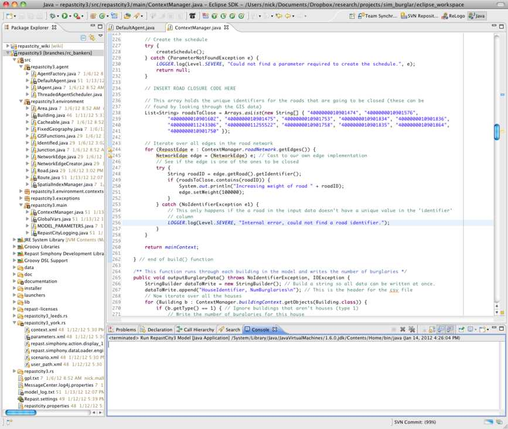

RepastCity Criminal Bankers Tutorial
Introduction
This tutorial uses the RepastCity model to build a simple agent-based model of a virtual city. In the basic model, agents choose a building to travel to, go there, and then travel home again; repeating this process forever. This tutorial enhance the model to make the behaviour a bit more interesting by turning the agents into criminal bankers (bankers who, in these tough economic times, need to commit burglary to top up their bonuses). We can then explore some interesting city dynamics.
The following changes will be made to the basic model:
- Give the agents a 'workplace' - a bank that they can use for their legitimate city jobs.
- Implement a clock so that agents know what the time is, not just how many time steps ('iterations') have occurred.
- Change the agent's behaviour so that they go to work between 9am - 5pm and spend the rest of their time at home (or travelling).
- Further update the agents' behaviour so that they randomly commit burglary if they pass a suitable house while they are travelling.
- Remove a few key roads from the road network to see what affect this will have on patterns of burglary.
This tutorial assumes that the reader understands Java programming and has used Repast Simphony (Java) before. The Repast documentation page has numerous tutorials and the Getting Started (Java) tutorial is particularly relevant.
GIS Data - York
The data for the tutorial cover part of the city of York. It is real GIS data produced by Ordnance Survey but, for the sake of this tutorial, the data have been cut down by removing a large number of the houses and roads. The image below illustrates the study area; agents live in a suburban area towards the north of the city and travel into the centre for work. There are a small number of major roads which offer the quickest routes into the city but, due to budget cuts, the council are going to have to close these and the bankers will have to find new routes. This might lead to interesting effects on travel patterns and on burglary rates.

Model Organisation
Before starting the tutorial it is helpful to understand how Repast Simphony models are organised. In particular, agents are organised into collections called Contexts. A context is basically a bucket that can be used to hold agents. Contexts are arranged hierarchically and can contain sub-contexts. Agents who exist in a sub-context also exist in the parent context, but the reverse is not necessarily true. For example, in a School context there might be Teacher and Student sub-contexts (and even further Class sub-contexts).
Projections are used to give the agents a space and can define their relationships. For example, 'GIS' projections gives each agent an (x, y) spatial location and 'Network' projections allow relationships between agents to be defined (e.g. a social network). Projections are created for specific contexts and will automatically contain every agent within the context (so if an agent is added to a context it is also added to any projections which have been created on that context).
The figure below illustrates the organisation of the RepastCity model. Each context has an associated GIS projection to store the spatial locations of the objects.

The JunctionContext is at the central means of routing agents. A Junction object is defined as the point at which two roads cross (e.g. an intersection). Therefore the JunctionGeogaraphy GIS projection is used to hold the locations of all the road intersections, and RoadNetwork is a network projection that contains the links between different junctions. Hence agents use the network to work out how to move from one place to another along the road network.
A fuller description of the routing algorithm itself is available on the crimesim blog.
Loading the Tutorial and the Repast GUI
The tutorial is part of a larger project called RepastCity which is basically a re-design of my PhD burglary model. If you have an existing Repast Simphony installation (which is basically a plug-in for the Eclipse IDE) you can download the bankers tutorial from here, unzip it and then import it with Eclipse using ''File -> Import -> General -> Existing Projects into Workspace''. However, for this tutorial I have created a pre-packed version of Eclipse with Repast Simphony and the bankers tutorial already loaded. It is available here:
N:\Earth&Environment\Geography\TransferArea\NickMalleson\RepastSimphony-2.0-beta.zip
To start the tutorial:
- Copy the RepastSimphony-2.0-beta.zip directory (above) to somewhere on your PC (the Desktop is fine). It's quite big (~400Mb) so this might take a few mins. I wouldn't copy it to your M: drive because it will probably use all of your quota.
- Extract the zip file, which should create a single new directory called RepastSimphony-2.0-beta/
- Go into the RepastSimphony-2.0-beta/eclipse directory and run the eclipse.exe file. This will start Eclipse.
- You will be prompted to choose a workspace. Choose the RepastSimphony-2.0-beta/workspace (i.e. a subdirectory of the folder you just downloaded).
- Once Eclipse has finished loading you should see the something like the image below. The left window shows all the projects in your workspace (at the moment there is only repastcity_bankers) and the right window will be where the Java code can be editted.
- To make sure the project is displayed properly, you need to change to the 'Java perspective' by clicking on the top-right button (circled on the image below). This changes how Eclipse windows and buttons behave; by default you start in 'ReLogo' mode which is for models written in Repast's version of the Logo language (which, by the way, is very good, it's worth doing the ReLogo Tutorial if you have a spare hour).
- Finally we can run the model by clicking on the down arrow next to the green button (circled on the image below) and choosing 'Run Bankers Model'

You will now be presented with the Repast Simphony GUI. This has all the controls for the simulation, such as starting or pausing it, changing parameters and adding displays. To initialise the simulation (read the GIS data and create the agents/environment) press the 'initialise' button and to start it press 'play' (These are indicated below). You should see the agents move around randomly from house to house; now we will start to improve their behaviour.

Giving Agents Somewhere to Work
In the basic model, agents are instances of the DefaultAgent class which lives in the repastcity3.agent package. To make the first change to the agents, we need to open this source file:
- In the left hand window (the 'Package Explorer'), expand the repastcity_bankers folder so that you can see the contents of the model.
- Expand the src folder to see all the source files and then expand``repastcity3.agent`` package.
- Open the DefaultAgent.java class. It is possible to create a new class for our banker agents (called Banker for example) but for now we'll just keep the boring DefaultAgent.
- Scroll down to find the step() method.

The task for this stage is to find a bank for the agents to work in and set their workplace variable accordingly. The ContextManager class is responsible for creating agents and generally configuring the simulation and it is this class that ensures each agent has a home. We will see how this class works later, but in the meantime we will add some code to the agent's default constructor to set their workplace variable.
Repast Simphony organises objects into collections called Contexts. The model works by reading all buildings in the GIS data and adding them into their own context called buildingContext. So, to find a bank we need to iterate over all buildings in the model until we find a bank, then tell the agent that the building we have just found is where they will work. To do this, find the constructor near the top of the DefatultAgent source file and replace the text that is there already:
public DefaultAgent() {
this.id = uniqueID++;
}
with the following:
public DefaultAgent() {
this.id = uniqueID++;
// Find a building that agents can use as their workplace. First, iterate over all buildings in the model
for (Building b:ContextManager.buildingContext.getRandomObjects(Building.class, 10000)) {
// See if the building is a bank (they will have type==2).
if (b.getType()==2) {
this.workplace = b;
break; // Have found a bank, stop searching.
}
}
}
This code is relatively easy to understand, except for the command:
ContextManager.buildingContext.getRandomObjects(Building.class, 10000)
This returns an Iterable that can iterate over all the buildings in the buildingContext. We need to pass in the argument Building.class because it is possible for a context to hold more than one type of object. For example, our building context could hold houses, schools, railway stations etc. The other argument (10000) defines the number of objects that we would like to return; there are fewer than 10,000 buildings in the model so we will get all of them. The Simphony JavaDoc explains these functions in more detail, but if you hold your mouse over the function in Eclipse you should also be able to see the documentation.
Now, when each agent is generated they will also be assigned a randomly-chosen workplace.
Implementing a clock
At the moment, it is possible to find out how many iterations the model has been running for by using a special Repast method:
RunEnvironment.getInstance().getCurrentSchedule().getTickCount();
However, we want a way for our agents to know what the real time is, in hours and minutes. To do this we can add some code to the ContextManager class which will maintain a realTime variable. This variable will be public so that other classes can access it and we will also create a method that updates the value of the timer at each iteration. To do this, open the ContextManager source file which is part of the repastcity3.main package. The following code can be added anywhere inside the class, but lets put it at the bottom of the source file (after the getAgentGeography() method but before the very last closing brace):
/* Variables to represent the real time in decimal hours (e.g. 14.5 means 2:30pm) and a method, called at every
* iteration, to update the variable. */
public static double realTime = 8.0; // (start at 8am)
public static int numberOfDays = 0; // It is also useful to count the number of days.
@ScheduledMethod(start=1, interval=1, priority=10)
public void updateRealTime() {
realTime += (1.0/60.0); // Increase the time by one minute (a 60th of an hour)
if (realTime >= 24.0) { // If it's the end of a day then reset the time
realTime = 0.0;
numberOfDays++; // Also increment our day counter
LOGGER.log(Level.INFO, "Simulating day "+numberOfDays);
}
}
The updateRealTime() method itself should be fairly self explanatory but line:
@ScheduledMethod(start=1, interval=1)
needs some explanation. This is a way of scheduling a function in Repast using Java annotations. It tells the scheduler that we want the method to be called first at iteration 1, and then at every subsequent iteration. It is possible to have a more fine grained control over when methods are scheduled and in what order they should be called (more on this later), but annotations are nice because they are simple and they appear close to the code that is actually being scheduled. See the scheduling documentation for more information.
After these changes, the end of your ContextManager class should look something like the image below.

Making the Agents Work
Now that we have a clock it is possible to change the agents' behaviour so that they go to work at 9am and then go home again at 5pm. Open the DefaultAgent class again and find the step() method. This method was scheduled in the ContextManager code to be called at each iteration. (If you choose to look at how this is done by the createSchedule() method in ContextManager you'll notice that the scheduling method is much more complicated than that of our real time counter. This is because the agents are actually executed simultaneously in different threads which makes the simulation run much more quickly on multi-core computers).
At the moment, the code in the agents' step() method simply makes the agent travel from home to a randomly chosen building and back again forever. The first thing to do is either delete or comment-out all of the code in the DefaultBurglar.step() method. Then add the following to make them go to work between at 9am and home at 5pm:
// See what the time is, this will determine what the agent should be doing. The BigDecimal stuff
// is just to round the time to 5 decimal places, otherwise it will never be exactly 9.0 or 17.0.
double theTime = BigDecimal.valueOf(ContextManager.realTime).
round(new MathContext(5,RoundingMode.HALF_UP)).doubleValue();
if (theTime == 9.0) { // 9am, Agent should be working
this.route = new Route(this, this.workplace.getCoords(), this.workplace); // Create a route to work
}
else if (theTime == 17.0) { // 5pm, agent should go home
this.route = new Route(this, this.home.getCoords(), this.home); // Create a route home
}
if (this.route == null) {
// Don't do anything if a route hasn't been created.
} else if (this.route.atDestination()) {
// Have reached our destination, lets delete the old route (more efficient).
this.route = null;
}
else {
// Otherwise travel towards the destination
this.route.travel();
}
Try running the model again and you should see the agents travel to the banking heartland of York and then home again in the evening after making an invaluable contribution to society.
Topping Up their Bonuses with Burglary
In these tough economic times, our banker agents have been hit harder than others and decide to resort to burglary to supplement their meagre bonuses. There are a huge number of factors that could be used to realistically model burglary, but in this simple application the agents will just examine each house that they pass and throw a dice to decide whether or not to burgle.
We will add this functionality immediately after the agent has finished travelling. So, open DefaultAgent and find the step() method that we edited earlier. Then, immediately after the this.route.travel() command, add the following:
for (Building b : this.route.getPassedBuildings()) {
if (b.getType() == 1) { // Only burgle houses (not banks too)
// Roll a dice to see if this house should be burgled (1 in 100 chance)
double random;
synchronized (ContextManager.randomLock) {
// This synchronized block ensures that only one agent at a time can access RandomHelper
random = RandomHelper.nextDouble();
}
if (random >= 0.99) {
b.burgled(); // Tell the building that it has been burgled
LOGGER.log(Level.FINE, "Agent " + this.toString() + " has burgled building "
+ b.getIdentifier() + "Total: " + b.getNumBurglaries() + ". Random value: " + random);
}
}
} // for passed buildings
The Route object allows the agents to retrieve a list of all the buildings that they passed the last time they travelled (route.getPassedBuildings()). So, the above code (which is called each time an agent moves) loops through all the buildings they have just passed, checks if they are houses, and has a 1% change of burgling each house. Note that the RandomHelper class is used to generate the random number. This is a Simphony class and means that if we configure the random number generation properly it should be possible to make a simulation repeatable. We need to have the random = RandomHelper.nextDouble(); call in a synchronized block to make sure that two agents don't try to get a random number at the same time (for some reason Simphony doesn't like this!).
Afterwards, the whole step() function should look like this:
public void step() throws Exception {
// See what the time is, this will determine what the agent should be doing. The BigDecimal stuff
// is just to round the time to 5 decimal places, otherwise it will never be exactly 9.0 or 17.0.
double theTime = BigDecimal.valueOf(ContextManager.realTime).round(new MathContext(5, RoundingMode.HALF_UP))
.doubleValue();
if (theTime == 9.0) { // 9am, Agent should be working
this.route = new Route(this, this.workplace.getCoords(), this.workplace); // Create a route to work
} else if (theTime == 17.0) { // 5pm, agent should go home
this.route = new Route(this, this.home.getCoords(), this.home); // Create a route home
}
if (this.route == null) {
// Don't do anything if a route hasn't been created.
} else if (this.route.atDestination()) {
// Have reached our destination, lets delete the old route (more efficient).
this.route = null;
} else {
// Otherwise travel towards the destination
this.route.travel();
for (Building b : this.route.getPassedBuildings()) {
if (b.getType() == 1) { // Only burgle houses (not banks too)
// Roll a dice to see if this house should be burgled (1 in 100 chance)
double random;
synchronized (ContextManager.randomLock) {
// This synchronized block ensures that only one agent at a time can access RandomHelper
random = RandomHelper.nextDouble();
}
if (random >= 0.99) {
b.burgled(); // Tell the building that it has been burgled
LOGGER.log(Level.FINE, "Agent " + this.toString() + " has burgled building "
+ b.getIdentifier() + "Total: " + b.getNumBurglaries() + ". Random value: " + random);
}
}
} // for passed buildings
} // else
} // step()
Getting Some Results
Repast Simphony has an inbuilt mechanism that uses Data Sets to collect information about the agents and Outputters to export the data to files etc. Outputters and Data Sets are created on a particular context (e.g. the AgentContext) using the Repast GUI. For more information, there are Simphony tutorials about data sets and outputters.
For this tutorial, however, we will write our own small function that collects the number of burglaries in each house at the end of the simulation and writes it out to a csv file. To do this, open the ContextManager class and create a function called outputBurglaryData. It doesn't matter where the code actually goes, but for clarity (and so that your screen will look like my images below) add it directly after the build() function and before the start of createSchedule() (around line 240). Add the following code:
/** This function runs through each building in the model and writes the number of burglaries */
public void outputBurglaryData() throws NoIdentifierException, IOException {
StringBuilder dataToWrite = new StringBuilder(); // Build a string so all data can be written at once.
dataToWrite.append("HouseIdentifier, NumBurglaries\n"); // This is the header for the csv file
// Now iterate over all the houses
for (Building b : ContextManager.buildingContext.getObjects(Building.class)) {
if (b.getType() == 1) { // Ignore buildings that aren't houses (type 1)
// Write the number of burglaries for this house
dataToWrite.append(b.getIdentifier() + ", " + b.getNumBurglaries() + "\n");
} // if
} // for
// Now write this data to a file
BufferedWriter bw = new BufferedWriter(new FileWriter(new File("results.csv")));
bw.write(dataToWrite.toString());
bw.close();
// And log the data as well so we can see it on the console.
LOGGER.info(dataToWrite.toString());
}
Finally, we need to schedule the function to be called when the simulation finishes. Unlike the updateRealTime() method that we scheduler earlier, outputBurglaryData() cannot be scheduled with annotations because we don't know, at compile time, when the simulation will finish. So we have to schedule the method manually. To do this, first find the createSchedule() method. The first line of the function should be:
ISchedule schedule = RunEnvironment.getInstance().getCurrentSchedule();
This gets the current schedule object. We can now tell the scheduler to call our new function when the simulation finishes by adding this just below the ISchedule line:
// Schedule the outputBurglaryData() function to be called at the end of the simulation ScheduleParameters params = ScheduleParameters.createAtEnd(ScheduleParameters.LAST_PRIORITY); schedule.schedule(params, this, "outputBurglaryData");
The first line creates a ScheduleParameters object to tell the scheduler when the function should be called - at the end of the simulation and, if there are lots of functions called simultaneously, it should be the last one. Then the second line tells the scheduler to use those parameters to schedule a function called outputBurglaryData. The this argument tells the scheduler which class the method could be found in; if we wanted to schedule a method in another class we could pass a different object here.
After implementing these changes you can run the model again and should see a load of house information printed at the end of the simulation. A file called results.csv will also be created in the root project directory (if you can't see this immediately right click on the 'repastcity_bankers' project folder and click on 'Refresh'). This file can be joined to the original spatial data using a GIS to explore the burglary patterns (there will be an example of this later).
Austerity Road Closures
In these times of austerity, the Council have decided that they need to close some roads to save money. They have identified the main road linking our bankers' suburb with the city centre as a good one to close, so in this section we will implement this change. Recall that, in Repast Simphony, relationships between objects can be represented by a NetworkProjection. These are commonly used to represent social networks but can also be used to build a road network by defining which roads are linked to each other. A node in the network represents an intersection (the junction where two roads meet) and edges in the network represent the roads themselves. Each edge has a weight which, in this case, is the length of the road section between two intersections. Therefore when the Route class builds a route for an agent it uses the network to find the shortest path.
To implement the road closures, we will add some code to the ContextManager class to:
- look through all the roads
- find the ones that are to be closed
- increase their weight value so that it looks like they are incredibly long.
Afterwards the Route class will stop using the closed roads in favour of a different route that appears shorter. Alternatively, we could also simply delete the roads from our input GIS data. This is probably a more sensible approach but, for the sake of this tutorial, we will manipulate the road weights because it demonstrates how to work with the road network.
Open the ContextManager class (in the repastcity3.main package) if it is not open already, find the build() method and scroll down to the end (near line number 230). Then insert this code directly after the '// INSERT ROAD CLOSURE CODE HERE' (the code will be explained in more detail below):
// This array holds the unique identifiers for the roads that are going to be closed (these can be
// found by looking through the GIS data)
List<String> roadsToClose = Arrays.asList(new String[]{"4000000010901474", "4000000010901576",
"4000000010901602", "4000000010901475", "4000000010901753", "4000000010901834", "4000000010901836",
"4000000011243306", "4000000011255522", "4000000010901758", "4000000010901835", "4000000010901864",
"4000000010901750" });
// Iterate over all edges in the road network
for (RepastEdge e:ContextManager.roadNetwork.getEdges()) {
NetworkEdge edge = (NetworkEdge) e; // Cast to our own edge implementation
try {
// See if the edge is one of the ones to be closed
String roadID = edge.getRoad().getIdentifier();
if (roadsToClose.contains(roadID)) {
System.out.println("Increasing weight of road "+roadID);
edge.setWeight(100000);
}
} catch (NoIdentifierException e1) {
// This only happens if the a road in the input data doesn't have a unique value in the 'identifier' column
LOGGER.log(Level.SEVERE, "Internal error, could not find a road identifier.");
}
}
It is worth explaining the above code in slightly more detail as it says a lot about how Repast Simphony works. The line:
for (RepastEdge e:ContextManager.roadNetwork.getEdges()) {
iterates over all the edges in the road network and returns objects of type RepastEdge. However, when the network is being build for this model, it actually creates edges of the NetworkEdge type (in the repastcity3.environment package). These edges have a method called getRoad() which returns the original road that was used to create the edge. Hence we can cast the edges:
NetworkEdge edge = (NetworkEdge) e; // Cast to our own edge implementation
and then get the underlying road and its identifier:
String roadID = edge.getRoad().getIdentifier();
The try-catch block is necessary because Road objects check that they have unique identifiers. This is mainly tell the developer if there is something wrong with the input GIS data: the road data must have a text column called 'identifier' and the road objects must have a unique string in this field.
Finally, if the road identifier matches one of the ID's of the roads that we want to close, simply increase the weight of the road so that it will never be used when the agents create new routes:
if (roadsToClose.contains(roadID)) {
edge.setWeight(100000);
}
Once you have finished adding the new code, the ContextManager class should look similar to below:
Try running the model again and seeing what happens. You should see the bankers take a different route to work, now that their original route has been closed.
Where do they burgle now?
Using a GIS, it is possible to save the burglary results produced before and after the road closures and produce maps. The image below shows an example of this, using the Kernel Density Algorithm to generate density maps of the burglary rates. As we can see, once the agents have to start taking a different route to work the patterns of burglary change dramatically. Although we could have predicted some of the changes, there are others that are much less intuitive.
Hopefully this result has has demonstrated some of the benefits of this type of modelling. Even with an extremely simple model we have been able to generate some interesting, real world patterns that could not have been entirely predicted through our intuition alone.